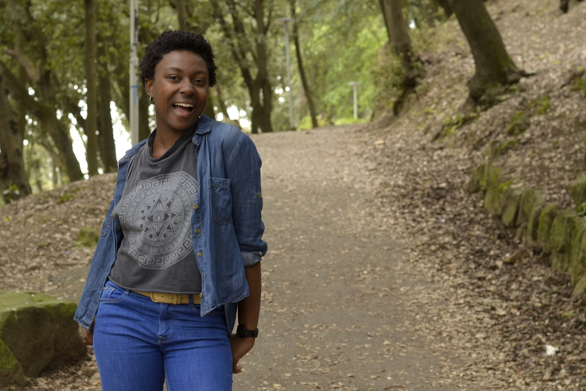

about us
Leland Quarterly: A Statement on Literature, Culture, Art, and Politics is the ink-and-paper home of Stanford art and writing. Our mission is to produce a quality arts and literature magazine that showcases the superlative talents of the Stanford community. We like to mix the fun with the scholarly, the abstract with the concrete, and we like to present all that in an attractive glossy magazine. Leland Quarterly is made possible by funding from the ASSU Publications Board and by the impeccable work of Giant Horse Printing.Please feel free to browse through our past issues on this site, download PDFs of the magazine on our issues page, or submit something of your own. And of course, e-mail us at lelandquarterly@gmail.com if you have any questions or comments. Enjoy!
who we are
EDITORS-IN-CHIEF
 On hiatus: Amy J. Chen ('18) is a Portland, Oregon native who lives in San Francisco, California, majoring in Computer Science + Art Practice. She likes art and writing, as is evident. Her hobby is making her bios the exact same number of characters as Nicole's to make her feel less awkward about the length of her bios.
On hiatus: Amy J. Chen ('18) is a Portland, Oregon native who lives in San Francisco, California, majoring in Computer Science + Art Practice. She likes art and writing, as is evident. Her hobby is making her bios the exact same number of characters as Nicole's to make her feel less awkward about the length of her bios.

Nicole Phillips ('18) hates writing bios. She is an outgoing introvert with a deep abiding love for art in many forms including theater, film, and of course, writing. Her first foray into writing was Winx Club fanfiction at the tender age of 12. She is more cat than human and regrets writing this bio already.